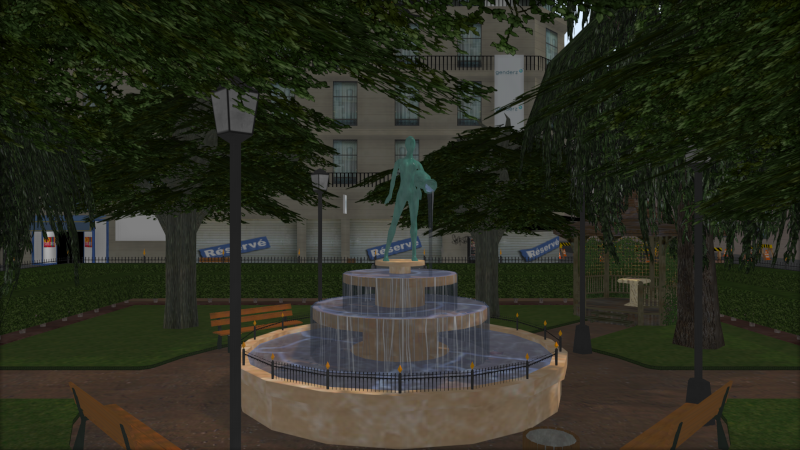

Castor3D is a 3D engine written in C++ 17.
It works on Windows and GNU/Linux.
It relies on Ashes as a rendering API, allowing Vulkan, Direct3D 11, and OpenGL.
The project itself is compilable on supported platforms using CMake (Building Castor3D).
Features
-
Deferred rendering for opaque objects.
-
Blended Weighted rendering for transparent objects.
-
Normal mapping.
-
Shadow Mapping (allowing to choose between Raw, PCF or Variance Shadow Maps).
-
Parallax Occlusion mapping.
-
Screen Space Ambient Occlusion (using Scalable Ambiant Obscurance implementation).
-
Reflection/Refraction Mapping.
-
PBR rendering (Metallic and Specular workflows), and Phong rendering.
-
HDR rendering with various tone mapping operators.
-
Screen Space Subsurface Scattering (without backlit transmittance yet).
-
Volumetric Light Scattering for the directional light source, if it projects shadows.
-
Cascaded Shadow Maps for the directional light source.
-
Global Illumination, through Light Propagation Volumes or Voxel Cone Tracing.
-
Frustum culling.
-
Scene graph.
-
Modular architecture through plug-ins.
-
Shaders are generated automatically from pipeline configuration.
-
Shaders are writable directly from C++ code.
-
Scenes are described using a text format easily comprehensible and extensible. (CSCN File Format)
-
Asynchronous (timers) or synchronour (thread) rendering.
Plugins
-
Importer: Allow importing meshes from external formats.
-
Divider: Allow implementation of mesh subdivision algorithms.
-
PostEffect: Allow implementation of post-effects.
-
Generator: Allow meshes and textures procedural generation.
-
Generic: Allow adding general features to the engine.
-
ToneMapping: Allow implementation of additional tone mapping operators.
Importers
-
ASSIMP: Multiple format mesh importer.
-
PLY: Stanford Polygon library mesh importer.
-
OBJ: Wavefront OBJ mesh importer.
Dividers
-
Loop subdivision surfaces.
-
Phong tessellation.
-
PN-Triangles surfaces.
PostEffects
-
Bloom: HDR Bloom implementation.
-
FilmGrain: To display some grain on the render.
-
GrayScale.
-
LightStreaks (using Kawase Light Streaks).
-
FXAA Antialiasing: fast low quality antialiasing.
-
SMAA Antialiasing (1X and T2X so far): slower high quality antialiasing.
-
Linear Motion Blur.
Generators
-
DiamondSquareTerrain: to generate terrains inside Castor3D scenes, using diamond-quare algorithm.
Generic
-
CastorGUI: to build GUIs inside Castor3D scenes.
ToneMappings
-
LinearToneMapping: Default tone mapping.
-
HaarmPieterDuikerToneMapping: Haarm Pieter Duiker tone mapping.
-
HejlBurgessDawsonToneMapping: Hejl Burgess Dawson (filmic) tone mapping.
-
ReinhardToneMapping: Reinhard tone mapping.
-
Uncharted2ToneMapping: Uncharted 2 tone mapping.
Other applications
-
CastorViewer: A scene viewer based on Castor3D.
-
CastorMeshConverter: A converter from various mesh files to Castor3D mesh format.
-
CastorMeshUpgrader: Upgrades from earlier versions of Castor3D mesh format to the latest one.
-
ImgConverter: Allows you to convert any image file type to XPM or ICO.
Screenshots

Full changelog: Change log


 1.8.15
1.8.15